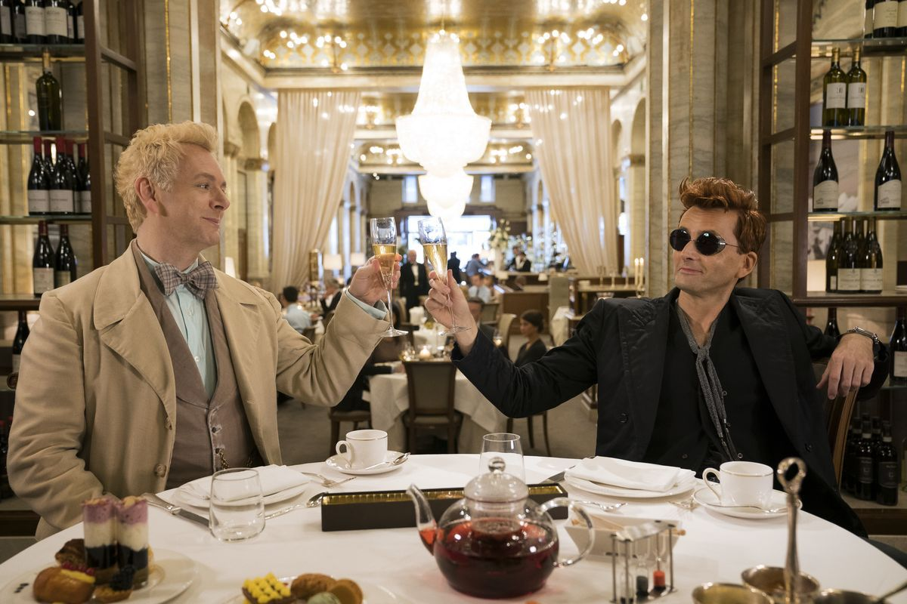
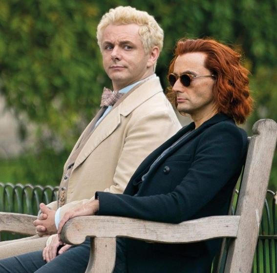

Первый трейлер "Благих Знамений"
Amazon представил первый трейлер самого (мной) ожидаемого мини-сериала 2019 года - "Благих Знамений" Нила Геймана и Терри Пратчетта.
Сериал снят по одноименной книге, и если вдруг вы её не читали, то позвольте я вам в двух словах расскажу.
Со времен сотворения мира жили на Земле ангел - Азирафель и демон - Кроули. Начальство сверху и снизу приставило из следить за человечеством, творить добро/зло (иногда) и ждать инструкций относительно конца света. И за шесть тысяч лет Кроули и Азирафель сдружились. Точнее как - они лучшие приятели. служба службой, а сверхъестественному существу на Земле может иногда быть очень одиноко. Так вот.
В один прекрасный день Ангел и Демон получают инструкции от руководства: Конец света близок, готовьтесь. И тут Демон, а вслед за ним и Ангел, понимают, что им нафиг совершенно не нужен этот начальственный Армагеддон. Им отлично живется на Земле, они любят музыку и маленькие ресторанчики, женщины опять-таки очень хороши. Конец света в их планы категорически не входит. И тогда Азирафель и Кроули решают Армагеддон саботировать. Помешать, другими словами, божественному предназначению.
А для конца света кто нужен в первую очередь? Правильно - Антихрист. Кроули и Азирафель на эту тему спорят и приходят к единственном правильному выводу: сам факт того, что папа у ребенка Сатана, вообще ни о чем не говорит. Генетика - ничто, воспитание - всё. "В конце концов папа когда-то тоже был ангелом, а демоном стал серьезно потом. Предполагать, что его сын по определению будет злым, тоже самое, что думать, что у мыши, которой мышеловкой отрубило хвост, будут рождаться бесхвостые дети". И они решают сына Сатаны отдать на воспитание в обычную английскую семью в глухой провинции. Ну а там - посмотрим как пойдет.
"Благие знамения" - до слез смешная и умная книжка, которая тычет острой палкой не только в фильм "Омен" со всей его мифологией и атрибутикой, но и в Откровения Иоанна Богослова. Читать это сплошное удовольствие (на русский её перевели не омерзительно, но все-таки это всё равно бледная тень оригинала, благо что написали книгу два лучших фэнтези-писателя современности). Есть все основания надеяться, что мини-сериал будет не менее развлекательным.